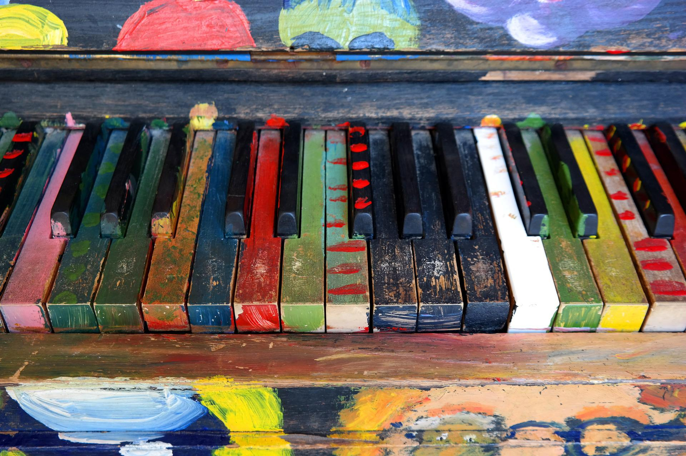
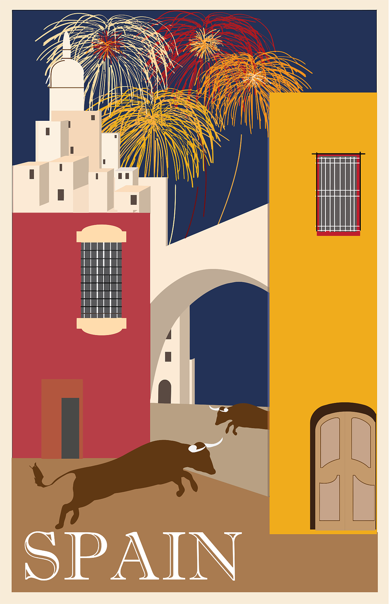

Welcome to my personal website! My name is Shana and I am a rising sophomore in high school. I’m very interested in computer science and engineering with great hopes of pursuing a career in those fields.
It's crazy what you can learn in one year. I like math and sometimes, I like english too. I love learning and genuinely hope it'll make a positive difference in this world.
PIANO

I've been playing the piano for the majority of my life... but I still can't quickly sight-read. I used to compete and do recitals. Now I play a bunch or chords and sing songs.
READING

I love to read, especially when I've got a lot of time to do so! There are still so many books I want to buy, but there's still so many on my shelf I've got to read!
SPANISH

It's a goal of mine to become fluent in Spanish. It's fun to learn while reading and writing in it.